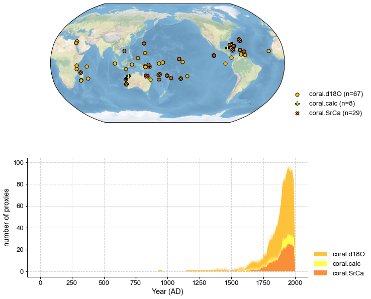
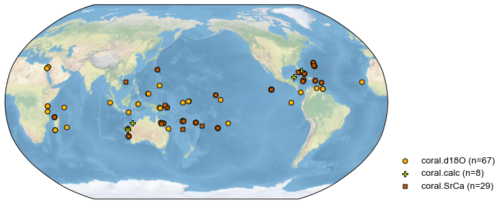
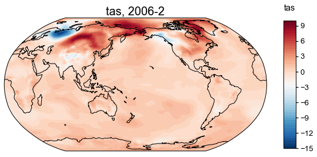
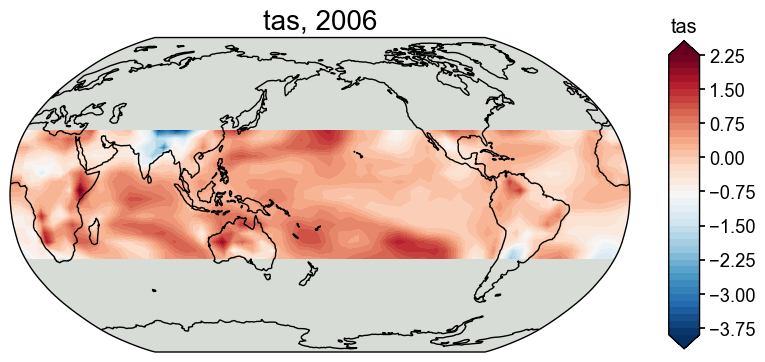
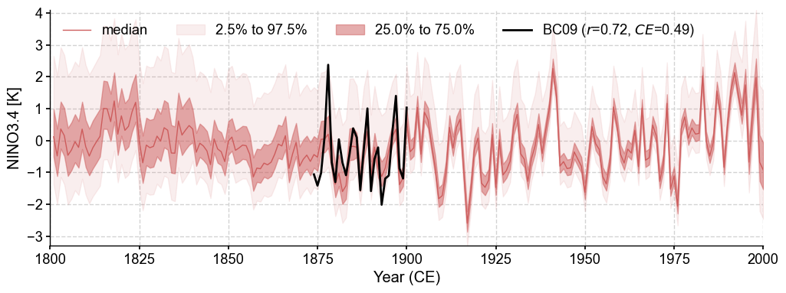
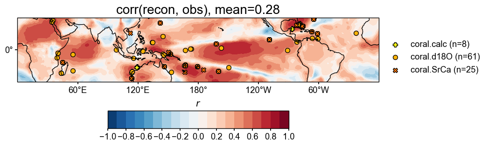

Real-world proxy experiments with LMR and PAGES2k
Contents
Real-world proxy experiments with LMR and PAGES2k¶
[1]:
%load_ext autoreload
%autoreload 2
import cfr
import pandas as pd
import numpy as np
Create a reconstruction job object¶
[2]:
job = cfr.ReconJob(verbose=True)
>>> job.configs:
{}
Load a proxy database¶
[3]:
job.load_proxydb('./data/pages2k_updated_Palmyra_dataset.pkl')
# the .plotly() method will generate an interactive map so that we are able to
# check the proxy ID and location information of each site.
job.proxydb.plotly()
Data type cannot be displayed: application/vnd.plotly.v1+json
Filter the proxy database¶
[5]:
job.filter_proxydb(by='ptype', keys=['coral'])
# the .plot() method will generate a static map utilizing the Cartopy library
fig, ax = job.proxydb.plot(plot_count=True)

Annualize/seasonalize the proxy database¶
[6]:
job.annualize_proxydb(months=[12, 1, 2], ptypes=['coral'], verbose=True)
fig, ax = job.proxydb.plot()
>>> job.configs["annualize_proxydb_months"] = [12, 1, 2]
>>> job.configs["annualize_proxydb_ptypes"] = ['coral']
Annualizing ProxyRecord: 100%|██████████| 104/104 [00:01<00:00, 58.61it/s]
>>> 104 records remaining
>>> job.proxydb updated

Load climate model priors¶
[7]:
job.load_clim(
tag='prior',
path_dict={
'tas': './data/tas_sfc_Amon_iCESM_past1000historical_085001-200512.nc',
},
anom_period=(1951, 1980),
verbose=True,
)
>>> job.configs["prior_path"] = {'tas': './data/tas_sfc_Amon_iCESM_past1000historical_085001-200512.nc'}
>>> job.configs["prior_anom_period"] = (1951, 1980)
>>> job.configs["prior_lon_name"] = lon
>>> job.configs["prior_time_name"] = time
>>> prior variables ['tas'] loaded
>>> job.prior created
[8]:
job.load_clim(
tag='obs',
path_dict={
'tas': './data/gistemp1200_ERSSTv4.nc',
},
rename_dict={'tas': 'tempanomaly'},
anom_period=(1951, 1980),
verbose=True,
)
>>> job.configs["obs_path"] = {'tas': './data/gistemp1200_ERSSTv4.nc'}
>>> job.configs["obs_rename_dict"] = {'tas': 'tempanomaly'}
>>> job.configs["obs_anom_period"] = (1951, 1980)
>>> job.configs["obs_lon_name"] = lon
>>> job.configs["obs_time_name"] = time
>>> obs variables ['tas'] loaded
>>> job.obs created
Calibrate the PSMs¶
[9]:
ptype_psm_dict = {
'coral.d18O': 'Linear',
'coral.calc': 'Linear',
'coral.SrCa': 'Linear',
}
ptype_season_dict = {
'coral.d18O': [12, 1, 2], # boreal winter
'coral.calc': [12, 1, 2], # boreal winter
'coral.SrCa': [12, 1, 2], # boreal winter
}
job.calib_psms(
ptype_psm_dict=ptype_psm_dict,
ptype_season_dict=ptype_season_dict,
calib_period=(1850, 2015),
verbose=True,)
>>> job.configs["ptype_psm_dict"] = {'coral.d18O': 'Linear', 'coral.calc': 'Linear', 'coral.SrCa': 'Linear'}
>>> job.configs["ptype_season_dict"] = {'coral.d18O': [12, 1, 2], 'coral.calc': [12, 1, 2], 'coral.SrCa': [12, 1, 2]}
>>> job.configs["psm_calib_period"] = (1850, 2015)
Calibrating the PSMs: 19%|█▉ | 20/104 [00:00<00:02, 39.02it/s]
The number of overlapped data points is 14 < 25. Skipping ...
The number of overlapped data points is 20 < 25. Skipping ...
The number of overlapped data points is 22 < 25. Skipping ...
Calibrating the PSMs: 28%|██▊ | 29/104 [00:00<00:01, 38.74it/s]
The number of overlapped data points is 9 < 25. Skipping ...
The number of overlapped data points is 24 < 25. Skipping ...
Calibrating the PSMs: 55%|█████▍ | 57/104 [00:01<00:01, 42.27it/s]
The number of overlapped data points is 22 < 25. Skipping ...
The number of overlapped data points is 22 < 25. Skipping ...
The number of overlapped data points is 0 < 25. Skipping ...
Calibrating the PSMs: 79%|███████▉ | 82/104 [00:02<00:00, 42.64it/s]
The number of overlapped data points is 21 < 25. Skipping ...
Calibrating the PSMs: 100%|██████████| 104/104 [00:02<00:00, 39.77it/s]
>>> The PSM for Ocn_144 failed to calibrate.
>>> The PSM for Ocn_149 failed to calibrate.
>>> The PSM for Ocn_150 failed to calibrate.
>>> The PSM for Ocn_145 failed to calibrate.
>>> The PSM for Ocn_152 failed to calibrate.
>>> The PSM for Ocn_164 failed to calibrate.
>>> The PSM for Ocn_165 failed to calibrate.
>>> The PSM for Ocn_138 failed to calibrate.
>>> The PSM for Ocn_183 failed to calibrate.
>>> 95 records tagged "calibrated" with ProxyRecord.psm created
Forward the PSMs¶
[10]:
job.forward_psms(verbose=True)
Forwarding the PSMs: 100%|██████████| 95/95 [00:08<00:00, 10.67it/s]
>>> ProxyRecord.pseudo created for 95 records
Annualize/seasonalize the climate model prior¶
[11]:
job.annualize_clim(tag='prior', verbose=True, months=[12, 1, 2])
fig, ax = job.prior['tas'].plot(it=-1)
>>> job.configs["prior_annualize_months"] = [12, 1, 2]
>>> Processing tas ...
>>> job.prior updated

Regrid the prior field¶
[12]:
job.regrid_clim(tag='prior', nlat=42, nlon=63, verbose=True)
job.prior['tas'].da
>>> job.configs["prior_regrid_nlat"] = 42
>>> job.configs["prior_regrid_nlon"] = 63
>>> Processing tas ...
[12]:
<xarray.DataArray 'tas' (time: 1157, lat: 42, lon: 63)>
array([[[-7.81051636e-01, -9.22830398e-01, -8.39860487e-01, ...,
-8.08501951e-01, -7.90614221e-01, -7.81051636e-01],
[-3.78635377e-01, -4.53974173e-01, -3.50083854e-01, ...,
-1.68662979e-01, -2.71238129e-01, -3.78635377e-01],
[-1.40333148e+00, -1.14323499e+00, -7.99864423e-01, ...,
-1.24427406e+00, -1.01681556e+00, -1.40333148e+00],
...,
[ 1.51642583e+00, 2.00791711e+00, 2.99710146e+00, ...,
-4.22339869e-01, 6.26514399e-01, 1.51642583e+00],
[ 1.51600984e+00, 1.81332871e+00, 1.98969667e+00, ...,
7.17246051e-01, 1.15366461e+00, 1.51600984e+00],
[-6.69174194e-02, -1.14359702e-01, -1.13317428e-01, ...,
-8.39093116e-02, -6.26213320e-02, -6.69174194e-02]],
[[ 3.99113983e-01, 2.50226914e-01, 3.51283409e-01, ...,
3.76062862e-01, 3.98603538e-01, 3.99113983e-01],
[ 8.05754846e-01, 7.93750222e-01, 9.23834706e-01, ...,
8.62339887e-01, 8.53999851e-01, 8.05754846e-01],
[ 3.78598095e-01, 6.81967092e-01, 9.79965518e-01, ...,
3.73871155e-01, 7.06629179e-01, 3.78598095e-01],
...
[-4.03990124e+00, -3.95388919e+00, -3.67437594e+00, ...,
-2.82537084e+00, -3.68772147e+00, -4.03990124e+00],
[-3.06803561e+00, -3.13736595e+00, -3.03790458e+00, ...,
-2.70351666e+00, -2.89840592e+00, -3.06803561e+00],
[-1.92743433e+00, -1.87511402e+00, -1.85468564e+00, ...,
-1.97049590e+00, -1.95583223e+00, -1.92743433e+00]],
[[ 1.40498352e+00, 1.38947419e+00, 1.34637156e+00, ...,
1.34081884e+00, 1.37822305e+00, 1.40498352e+00],
[ 1.24801511e+00, 1.29332777e+00, 1.29418854e+00, ...,
1.12494412e+00, 1.31675206e+00, 1.24801511e+00],
[ 6.13445685e-01, 5.69961437e-01, 4.73153891e-01, ...,
1.13487406e+00, 9.78545336e-01, 6.13445685e-01],
...,
[ 2.36734525e+00, 2.68027267e+00, 2.81354435e+00, ...,
1.76056505e+00, 2.16766833e+00, 2.36734525e+00],
[ 2.38290957e+00, 1.92326236e+00, 1.38590705e+00, ...,
2.66820318e+00, 2.51788330e+00, 2.38290957e+00],
[ 1.39060974e+00, 1.33488021e+00, 1.31009797e+00, ...,
1.42522898e+00, 1.41616428e+00, 1.39060974e+00]]])
Coordinates:
* time (time) object 0850-02-28 00:00:00 ... 2006-02-28 00:00:00
* lon (lon) float64 0.0 5.806 11.61 17.42 ... 342.6 348.4 354.2 360.0
* lat (lat) float64 -90.0 -85.61 -81.22 -76.83 ... 76.83 81.22 85.61 90.0Crop the prior field¶
[13]:
job.crop_clim(tag='prior', lat_min=-35, lat_max=35, verbose=True)
fig, ax = job.prior['tas'].plot(-1)
>>> job.configs["prior_lat_min"] = -35
>>> job.configs["prior_lat_max"] = 35
>>> job.configs["prior_lon_min"] = 0
>>> job.configs["prior_lon_max"] = 360
>>> Processing tas ...

Data assimilation¶
[14]:
job.run_da_mc(save_dirpath='./results/lmr-real-pages2k', recon_seeds=list(range(1, 11)), verbose=True)
>>> job.configs["recon_period"] = [0, 2000]
>>> job.configs["recon_loc_rad"] = 25000
>>> job.configs["recon_timescale"] = 1
>>> job.configs["nens"] = 100
>>> job.configs["recon_seeds"] = [1, 2, 3, 4, 5, 6, 7, 8, 9, 10]
>>> job.configs["assim_frac"] = 0.75
>>> job.configs["save_dirpath"] = ./results/lmr-real-pages2k
>>> job.configs["compress_params"] = {'zlib': True, 'least_significant_digit': 1}
>>> job.configs["output_full_ens"] = False
>>> job.configs["recon_sampling_mode"] = fixed
>>> seed: 1 | max: 10
KF updating: 100%|██████████| 2001/2001 [00:31<00:00, 63.11it/s]
>>> Reconstructed fields saved to: ./results/lmr-real-pages2k/job_r01_recon.nc
>>> seed: 2 | max: 10
KF updating: 100%|██████████| 2001/2001 [00:27<00:00, 73.21it/s]
>>> Reconstructed fields saved to: ./results/lmr-real-pages2k/job_r02_recon.nc
>>> seed: 3 | max: 10
KF updating: 100%|██████████| 2001/2001 [00:33<00:00, 59.30it/s]
>>> Reconstructed fields saved to: ./results/lmr-real-pages2k/job_r03_recon.nc
>>> seed: 4 | max: 10
KF updating: 100%|██████████| 2001/2001 [00:32<00:00, 62.50it/s]
>>> Reconstructed fields saved to: ./results/lmr-real-pages2k/job_r04_recon.nc
>>> seed: 5 | max: 10
KF updating: 100%|██████████| 2001/2001 [00:39<00:00, 51.01it/s]
>>> Reconstructed fields saved to: ./results/lmr-real-pages2k/job_r05_recon.nc
>>> seed: 6 | max: 10
KF updating: 100%|██████████| 2001/2001 [00:33<00:00, 59.22it/s]
>>> Reconstructed fields saved to: ./results/lmr-real-pages2k/job_r06_recon.nc
>>> seed: 7 | max: 10
KF updating: 100%|██████████| 2001/2001 [00:37<00:00, 53.96it/s]
>>> Reconstructed fields saved to: ./results/lmr-real-pages2k/job_r07_recon.nc
>>> seed: 8 | max: 10
KF updating: 100%|██████████| 2001/2001 [00:46<00:00, 43.16it/s]
>>> Reconstructed fields saved to: ./results/lmr-real-pages2k/job_r08_recon.nc
>>> seed: 9 | max: 10
KF updating: 100%|██████████| 2001/2001 [00:51<00:00, 38.71it/s]
>>> Reconstructed fields saved to: ./results/lmr-real-pages2k/job_r09_recon.nc
>>> seed: 10 | max: 10
KF updating: 100%|██████████| 2001/2001 [00:39<00:00, 50.75it/s]
>>> Reconstructed fields saved to: ./results/lmr-real-pages2k/job_r10_recon.nc
>>> DONE! Total time used: 8.73 mins.
Validation¶
[15]:
res = cfr.ReconRes('./results/lmr-real-pages2k', verbose=True)
>>> recon.paths:
['./results/lmr-real-pages2k/job_r01_recon.nc', './results/lmr-real-pages2k/job_r02_recon.nc', './results/lmr-real-pages2k/job_r03_recon.nc', './results/lmr-real-pages2k/job_r04_recon.nc', './results/lmr-real-pages2k/job_r05_recon.nc', './results/lmr-real-pages2k/job_r06_recon.nc', './results/lmr-real-pages2k/job_r07_recon.nc', './results/lmr-real-pages2k/job_r08_recon.nc', './results/lmr-real-pages2k/job_r09_recon.nc', './results/lmr-real-pages2k/job_r10_recon.nc']
[16]:
res.load(['nino3.4', 'tas'], verbose=True)
>>> ReconRes.recons["nino3.4"] created
>>> ReconRes.da["nino3.4"] created
>>> ReconRes.recons["tas"] created
>>> ReconRes.da["tas"] created
[17]:
import scipy.io as sio
import numpy as np
data = sio.loadmat('./data/BC09_NINO34.mat')
start_yr = 1874
end_yr = 2000
nyr = end_yr-start_yr+1
nino34 = np.zeros(nyr)
for i in range(nyr):
nino34[i] = np.mean(data['nino34'][12+i*12:14+i*12])
ref_value = nino34
ref_time = np.arange(start_yr, end_yr+1)
ref_name = 'BC09'
[86]:
fig, ax = res.recons['nino3.4'].validate(ref_time, ref_value, ref_name).plot_qs()
ax.set_xlim(1600, 2000)
ax.set_ylabel('NINO3.4 [K]')
cfr.showfig(fig)
cfr.savefig(fig, './results/lmr-real-pages2k/corr_recon_BC09.pdf')

Figure saved at: "results/lmr-real-pages2k/corr_recon_BC09.pdf"
[22]:
import xarray as xr
ds = xr.open_dataset('./data/tas_sfc_Amon_20CR_185101-201112.nc')
ref_fd = cfr.ClimateField().from_da(da=ds['tas'])
[30]:
ref_fd_ann = ref_fd.get_anom(ref_period=[1951, 1980]).annualize(months=[12, 1, 2])
[34]:
ref_fd_ann.da
[34]:
<xarray.DataArray 'tas' (time: 162, lat: 91, lon: 180)>
array([[[ 7.1690369e-01, 7.1690369e-01, 7.1690369e-01, ...,
7.1690369e-01, 7.1690369e-01, 7.1690369e-01],
[ 2.1503525e+00, 2.2120514e+00, 2.2679214e+00, ...,
1.9588776e+00, 2.0245361e+00, 2.0886612e+00],
[ 3.3581619e+00, 3.5077972e+00, 3.6580200e+00, ...,
2.8810577e+00, 3.0441284e+00, 3.2046814e+00],
...,
[-2.5335846e+00, -2.5581741e+00, -2.5896301e+00, ...,
-2.4542542e+00, -2.4814224e+00, -2.5090103e+00],
[-2.7338181e+00, -2.7434692e+00, -2.7536087e+00, ...,
-2.7088242e+00, -2.7198486e+00, -2.7293015e+00],
[-2.5562592e+00, -2.5562592e+00, -2.5562592e+00, ...,
-2.5562592e+00, -2.5562592e+00, -2.5562592e+00]],
[[-3.0655415e+00, -3.0655415e+00, -3.0655415e+00, ...,
-3.0655415e+00, -3.0655415e+00, -3.0655415e+00],
[-2.8594921e+00, -2.8558757e+00, -2.8606415e+00, ...,
-2.8627167e+00, -2.8661449e+00, -2.8624775e+00],
[-2.4746449e+00, -2.4591777e+00, -2.4497173e+00, ...,
-2.5207012e+00, -2.5011952e+00, -2.4882710e+00],
...
[ 2.7984619e-02, 4.6620686e-02, 6.0612995e-02, ...,
-2.7104696e-02, -8.6263018e-03, 6.4849854e-03],
[ 2.0793152e-01, 2.1215820e-01, 2.2059123e-01, ...,
1.7850749e-01, 1.8646748e-01, 1.9814555e-01],
[-1.5599568e-01, -1.5599568e-01, -1.5599568e-01, ...,
-1.5599568e-01, -1.5599568e-01, -1.5599568e-01]],
[[ 7.5868530e+00, 7.5868530e+00, 7.5868530e+00, ...,
7.5868530e+00, 7.5868530e+00, 7.5868530e+00],
[ 6.0601959e+00, 6.0754242e+00, 6.1032867e+00, ...,
5.9857178e+00, 6.0076447e+00, 6.0339203e+00],
[ 3.4533081e+00, 3.5451508e+00, 3.6359253e+00, ...,
3.2262268e+00, 3.2963715e+00, 3.3673859e+00],
...,
[-4.3894653e+00, -4.4257355e+00, -4.4487305e+00, ...,
-4.2693329e+00, -4.3131714e+00, -4.3542023e+00],
[-3.4067535e+00, -3.4344177e+00, -3.4751892e+00, ...,
-3.2930908e+00, -3.3261566e+00, -3.3700714e+00],
[-2.6226349e+00, -2.6226349e+00, -2.6226349e+00, ...,
-2.6226349e+00, -2.6226349e+00, -2.6226349e+00]]], dtype=float32)
Coordinates:
* time (time) datetime64[ns] 1851-02-28 1852-02-29 ... 2012-02-29
* lat (lat) float32 90.0 88.0 86.0 84.0 82.0 ... -84.0 -86.0 -88.0 -90.0
* lon (lon) float32 0.0 2.0 4.0 6.0 8.0 ... 350.0 352.0 354.0 356.0 358.0[88]:
stat = 'corr'
valid_fd = job.prior['tas'].validate(
ref_fd_ann, stat=stat,
interp_direction='from-ref',
valid_period=(1874, 2000),
time_name='time',
)
valid_fd.plot_kwargs.update({'cbar_orientation': 'horizontal', 'cbar_pad': 0.1})
fig, ax = valid_fd.plot(
title=f'{stat}(prior, obs), mean={valid_fd.geo_mean().values[0]:.2f}',
projection='PlateCarree',
latlon_range=(-34, 34, 0, 360),
plot_cbar=False,
**valid_fd.plot_kwargs)
cfr.showfig(fig)
cfr.savefig(fig, './results/lmr-real-pages2k/corr_prior_obs.pdf')
/Users/fzhu/Apps/miniconda3/envs/cfr-env/lib/python3.9/site-packages/numpy/lib/nanfunctions.py:1879: RuntimeWarning:
Degrees of freedom <= 0 for slice.
/Users/fzhu/Apps/miniconda3/envs/cfr-env/lib/python3.9/site-packages/numpy/lib/nanfunctions.py:1879: RuntimeWarning:
Degrees of freedom <= 0 for slice.
/Users/fzhu/Apps/miniconda3/envs/cfr-env/lib/python3.9/site-packages/cartopy/mpl/geoaxes.py:872: UserWarning:
Attempting to set identical left == right == -180.0 results in singular transformations; automatically expanding.

Figure saved at: "results/lmr-real-pages2k/corr_prior_obs.pdf"
[84]:
stat = 'corr'
valid_fd = res.recons['tas'].validate(
ref_fd_ann, stat=stat,
valid_period=(1874, 2000),
interp_direction='from-ref',
time_name='time',
)
valid_fd.plot_kwargs.update({'cbar_orientation': 'horizontal', 'cbar_pad': 0.1})
fig, ax = valid_fd.plot(
title=f'{stat}(recon, obs), mean={valid_fd.geo_mean().values[0]:.2f}',
projection='PlateCarree',
latlon_range=(-34, 34, 0, 360),
plot_proxydb=True, proxydb=job.proxydb.filter(by='tag', keys=['calibrated']),
proxydb_lgd_kws={'loc': 'lower left', 'bbox_to_anchor': (1, 0)},
**valid_fd.plot_kwargs)
cfr.showfig(fig)
cfr.savefig(fig, './results/lmr-real-pages2k/corr_recon_obs.pdf')
/Users/fzhu/Apps/miniconda3/envs/cfr-env/lib/python3.9/site-packages/numpy/lib/nanfunctions.py:1879: RuntimeWarning:
Degrees of freedom <= 0 for slice.
/Users/fzhu/Apps/miniconda3/envs/cfr-env/lib/python3.9/site-packages/numpy/lib/nanfunctions.py:1879: RuntimeWarning:
Degrees of freedom <= 0 for slice.
/Users/fzhu/Apps/miniconda3/envs/cfr-env/lib/python3.9/site-packages/cartopy/mpl/geoaxes.py:872: UserWarning:
Attempting to set identical left == right == -180.0 results in singular transformations; automatically expanding.

Figure saved at: "results/lmr-real-pages2k/corr_recon_obs.pdf"
[ ]: